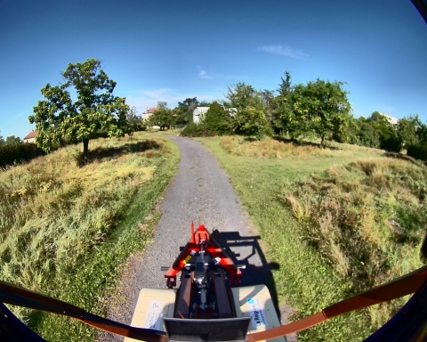
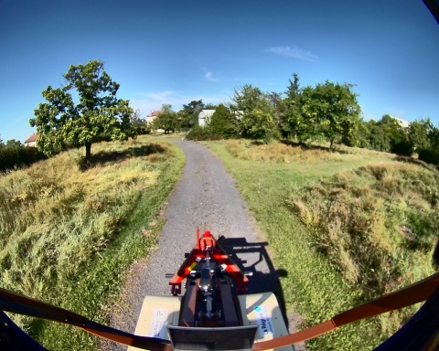

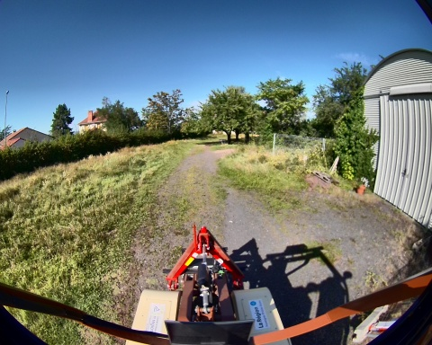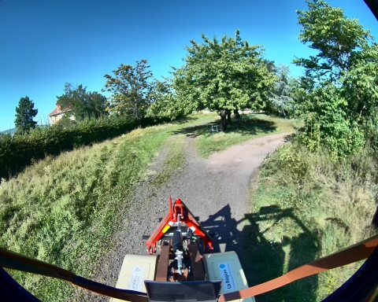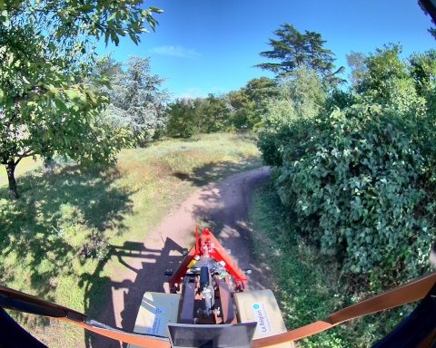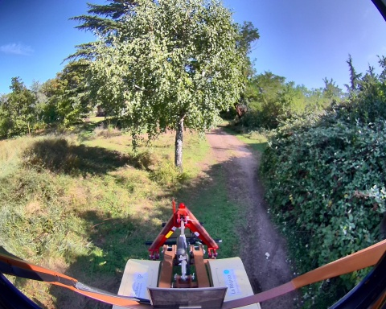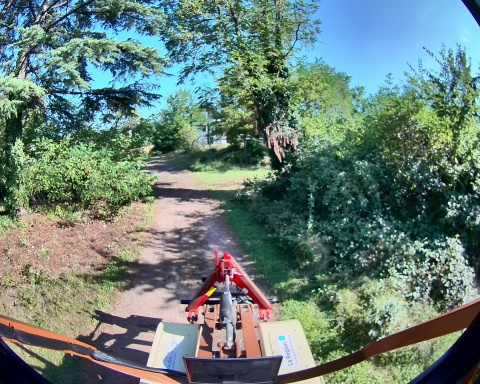
 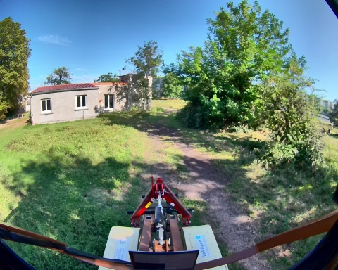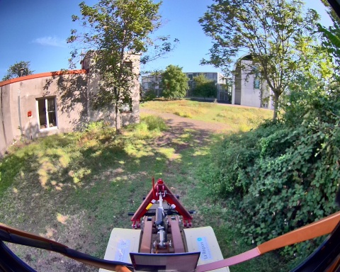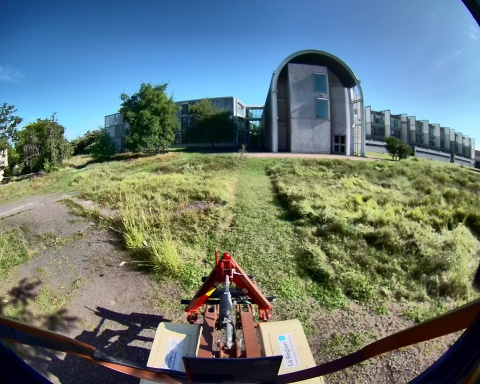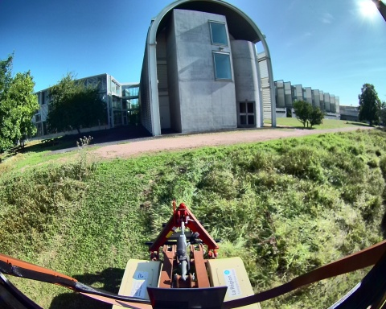
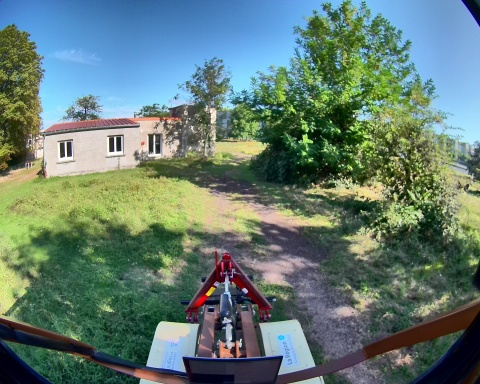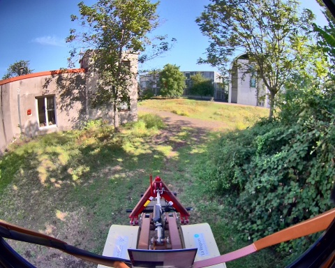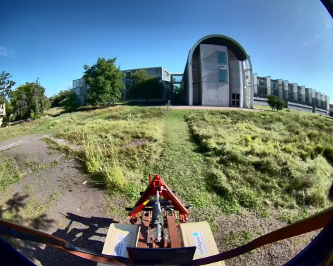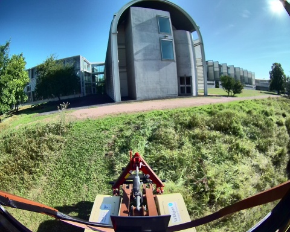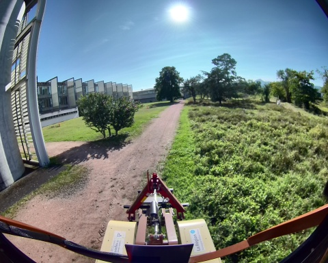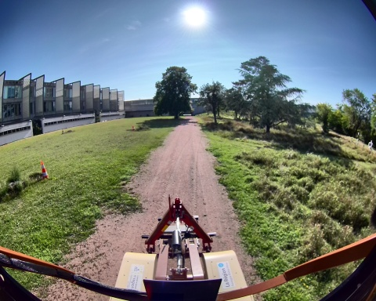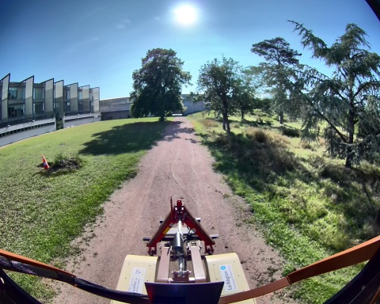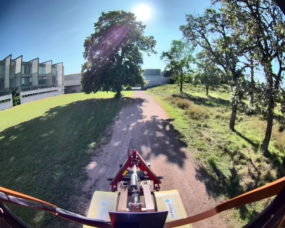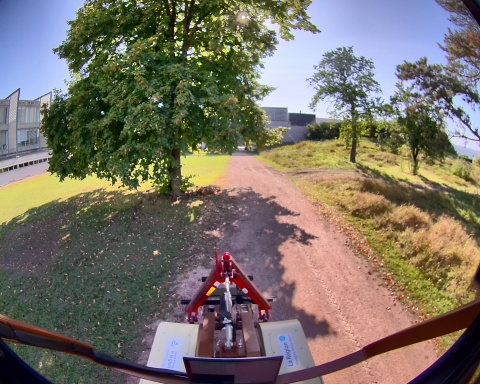
Chemin complet : /data/synchro_data/Innodura/Agrivia/Données/2024_bag/slam_icp_foret_b
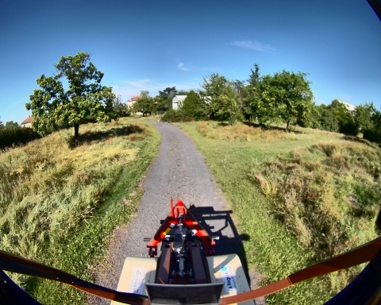
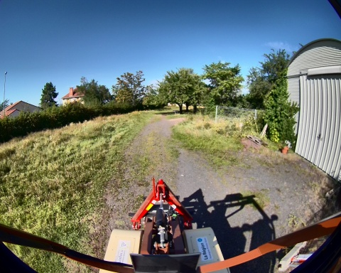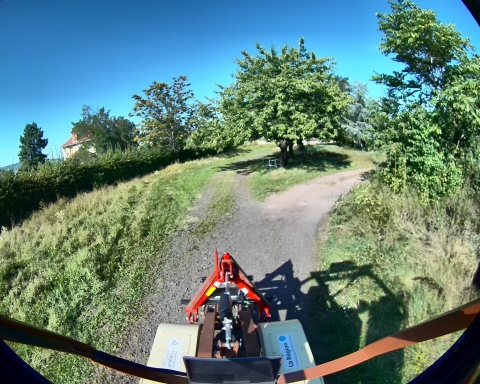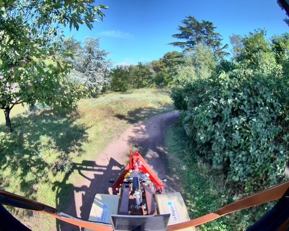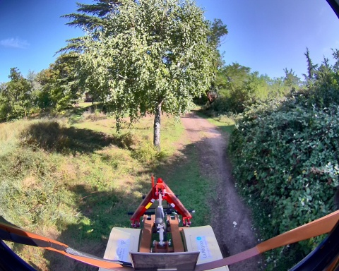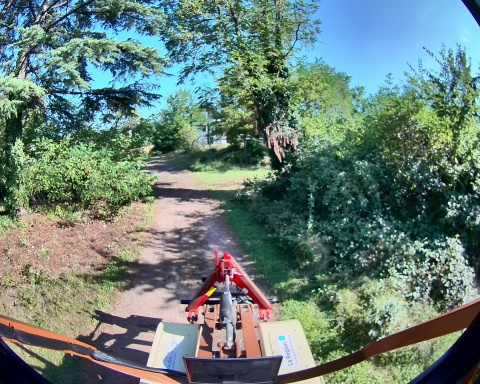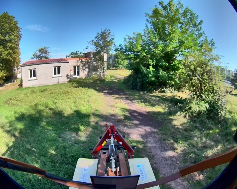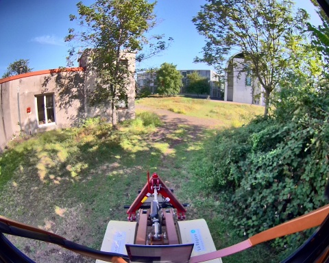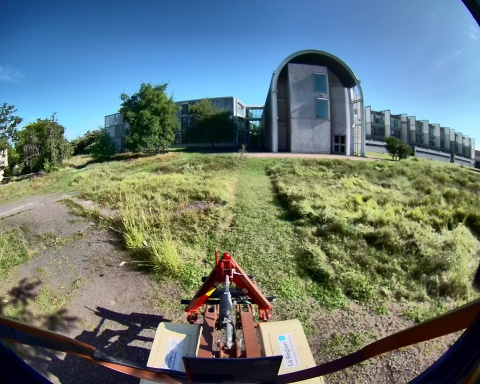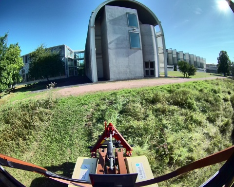
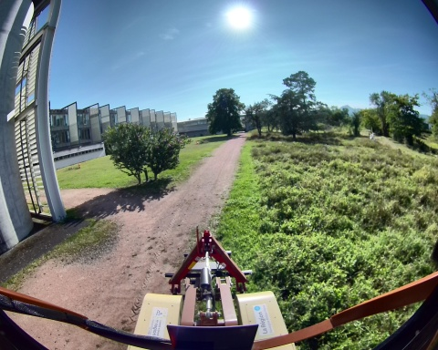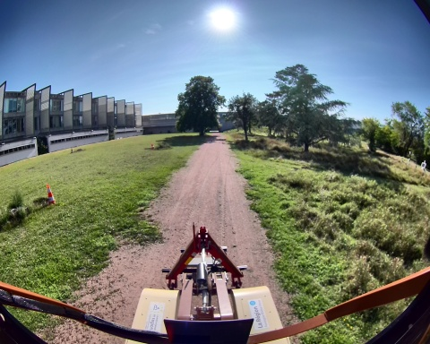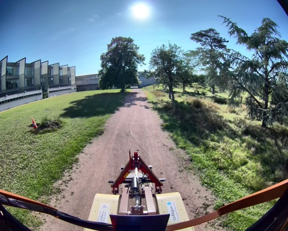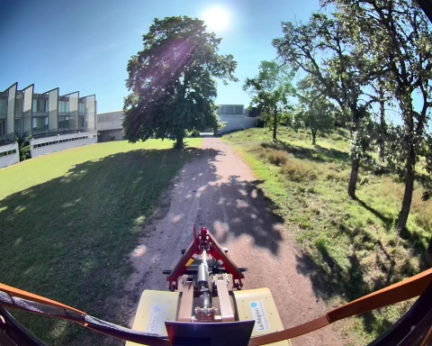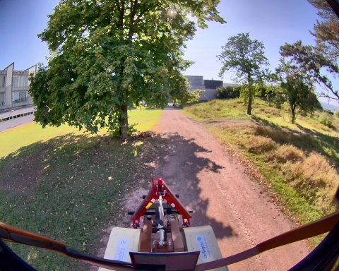
Files: slam_icp_foret_b_0.db3
Bag size: 7.8 GiB
Storage id: sqlite3
Duration: 188.696040407s
Start: Aug 27 2024 17:17:05.747779590 (1724771825.747779590)
End: Aug 27 2024 17:20:14.443819997 (1724772014.443819997)
Messages: 1889
Topic information: Topic: /alpo/camera/image_synchro | Type: sensor_msgs/msg/Image | Count: 943 | Serialization Format: cdr
Topic: /alpo/lidar/pointcloud_synchro | Type: sensor_msgs/msg/PointCloud2 | Count: 943 | Serialization Format: cdr
Topic: /tf_static | Type: tf2_msgs/msg/TFMessage | Count: 3 | Serialization Format: cdr